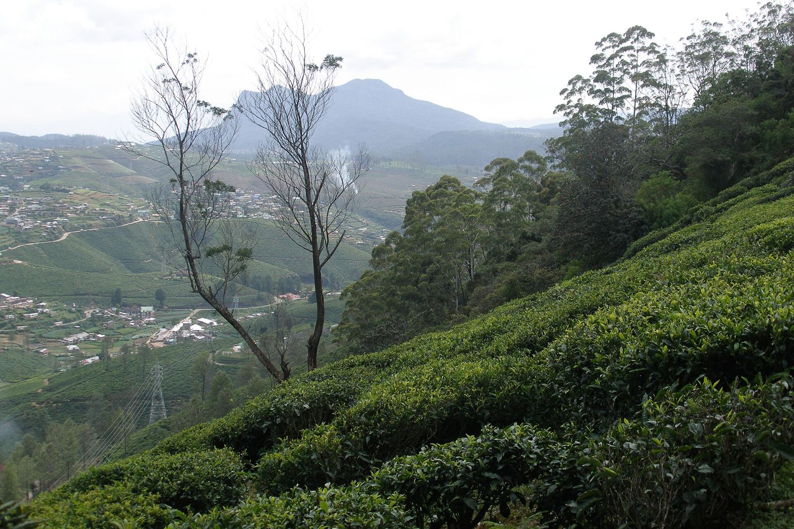
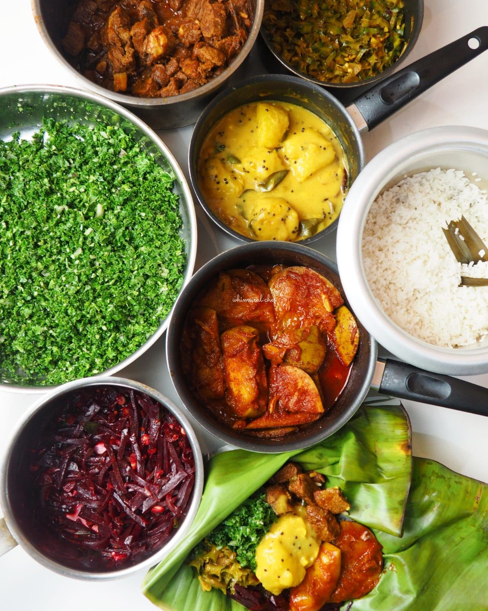
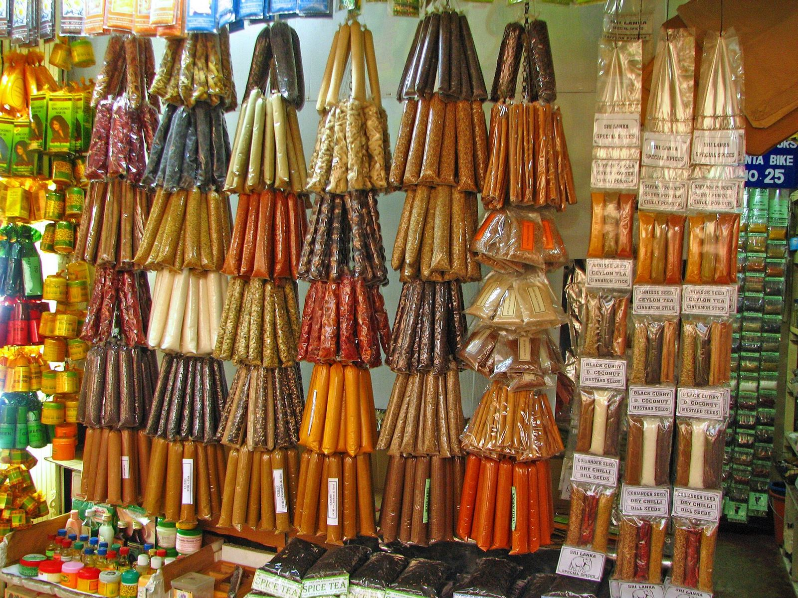
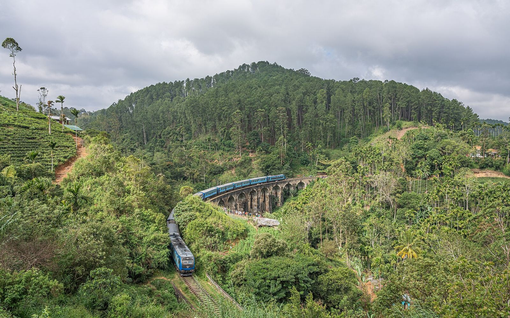
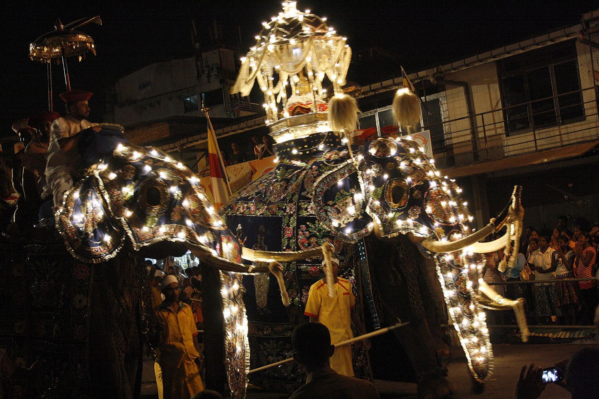
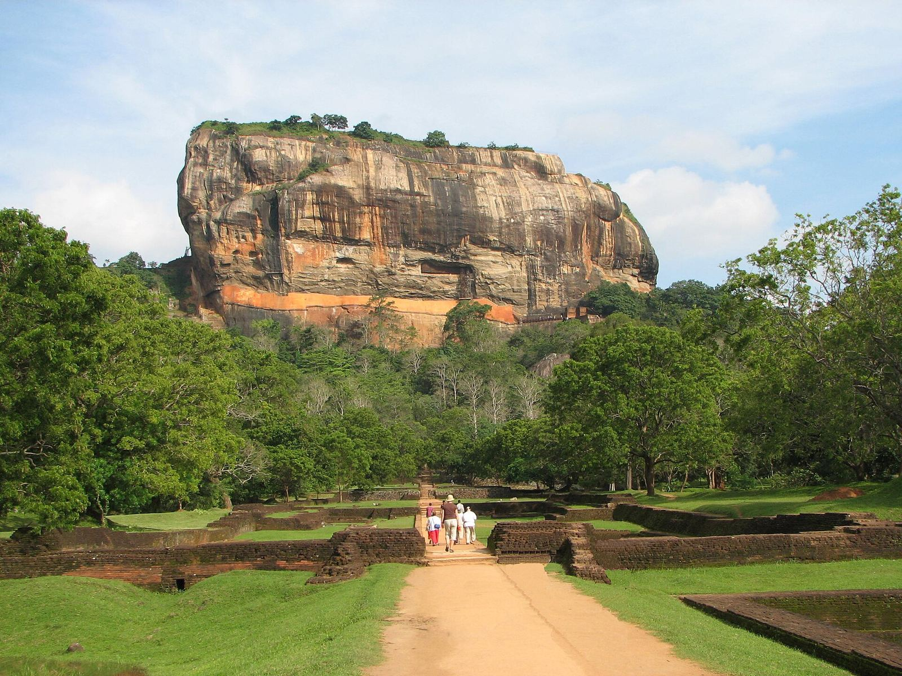
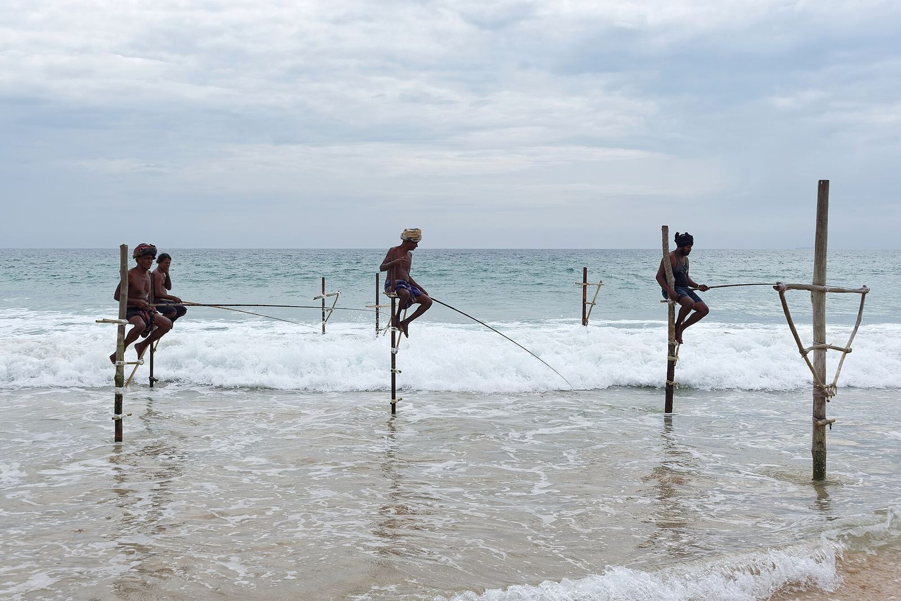
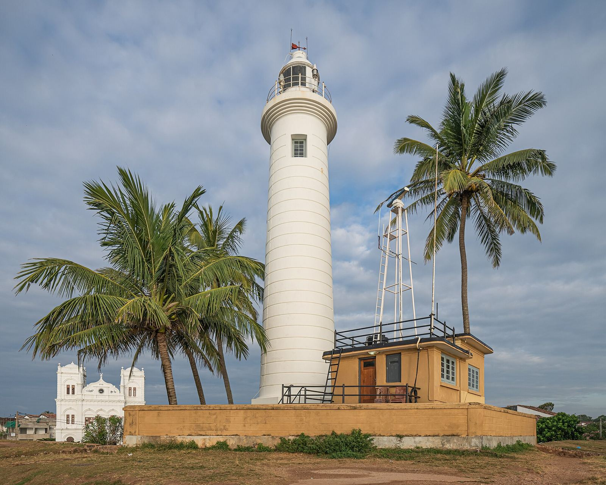
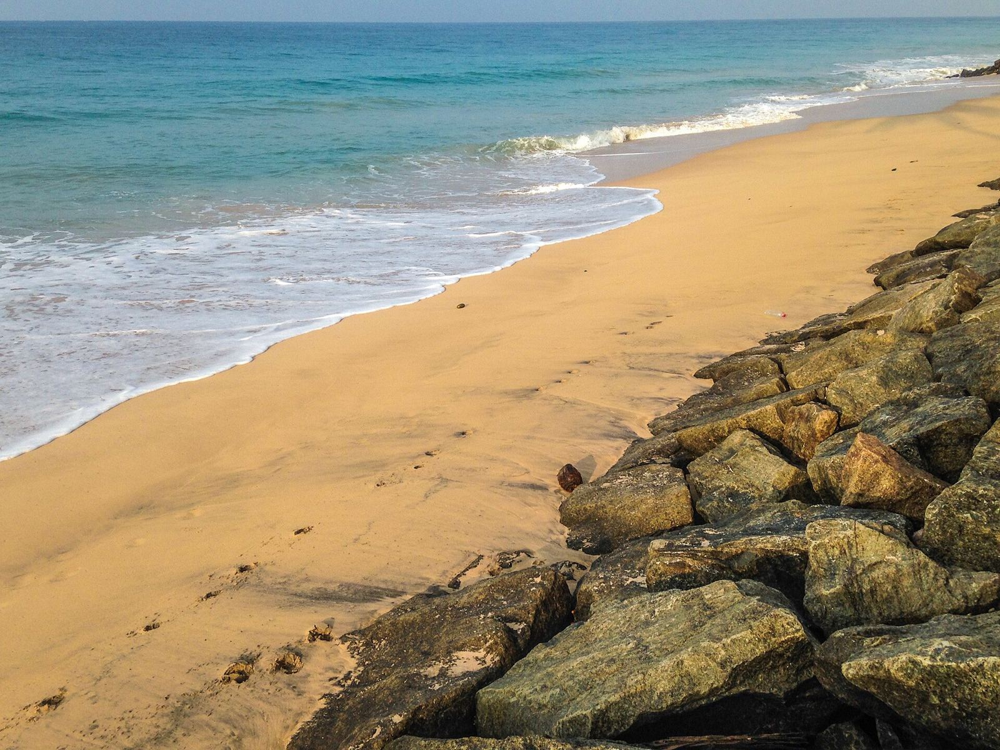

Tea plantations, Nuwara Eliya

Sri Lankan rice and curry

Spice shop in Kandy Market

Demodara (Nine Arch Bridge) near Ella

Elephants of Kandy Esala Perahera

Sigiriya

Stilt fishing near Galle

Galle Fort lighthouse

Sandy Galle Beach